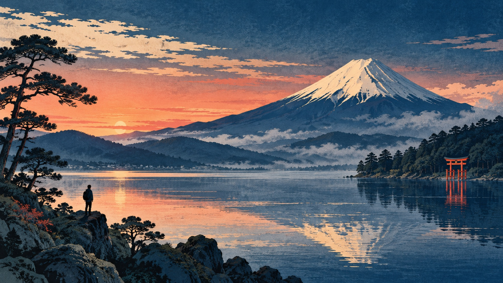

Familiar.
Until it isn’t.
Go beyond the postcard: the mountain classified for culture, summer nights built from light, manga that rewired the world, and places worth crossing the country for.

THE FUJITWIST
READ →
Four doors into Japan.
Everyone knows Mount Fuji. Almost nobody knows why UNESCO listed it.
The answer isn’t simply height, symmetry or snow—and it changes the way you see the mountain.

A dragon made of paper can stop an entire city.
Nebuta and Tanabata turn northern summer nights into moving stories of light.

Don’t ask for the “best manga” until you see these five doors.
A starter ranking built by mood—not hype—so your first chapter actually becomes a second.

10 places. Zero filler.
Tokyo energy, Kyoto stillness, island art, volcanic landscapes and a town built around hot water. A trip-shaping list that explains who each place is really for.
Open the Japan 10 →The five-door ranking.
For the grand adventure
One Piece — the phenomenon with a deceptively emotional engine.
For a smart, strange mystery
The Apothecary Diaries — court intrigue through a razor-sharp observer.
For beautiful quiet
Frieren — what happens after the quest everyone else would end on.
For a first sports obsession
Blue Lock — football rebuilt as a psychological pressure chamber.

Japan, opened by Yuji.
I’m Yuji Shimizu. I walk through Japan, teach its language, and build DraMap—an iPhone app for learning Japanese while playing. Japan Unfolded is independently published by me, so the recommendations and the app connection are transparent.
Learn Japanese while playing with DraMap.
Turn the language around you into part of an adventure.